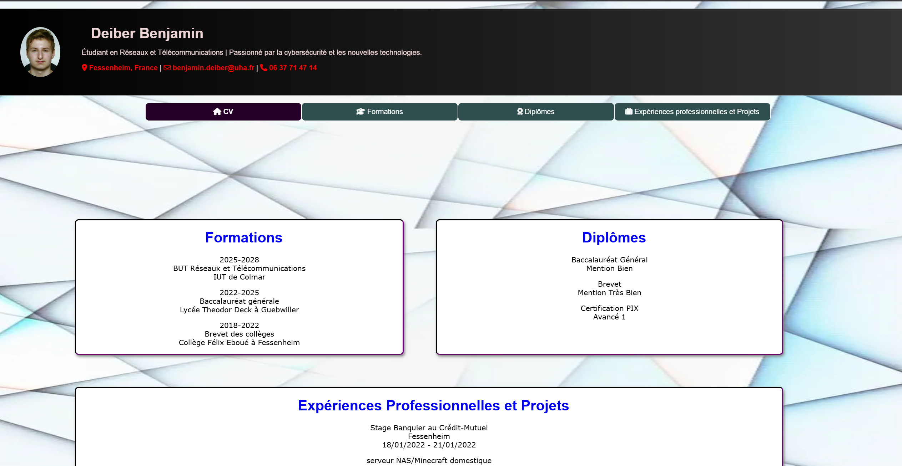
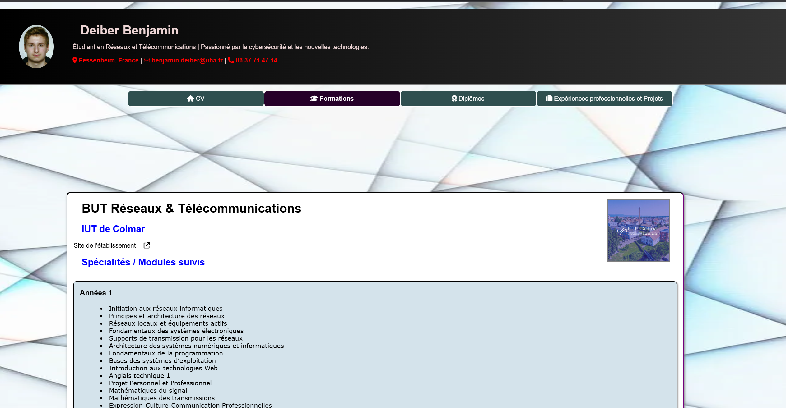
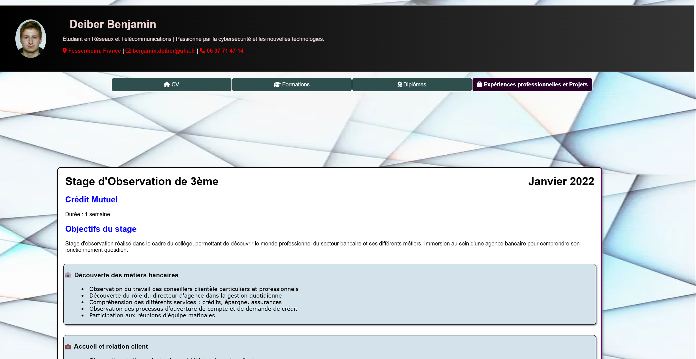
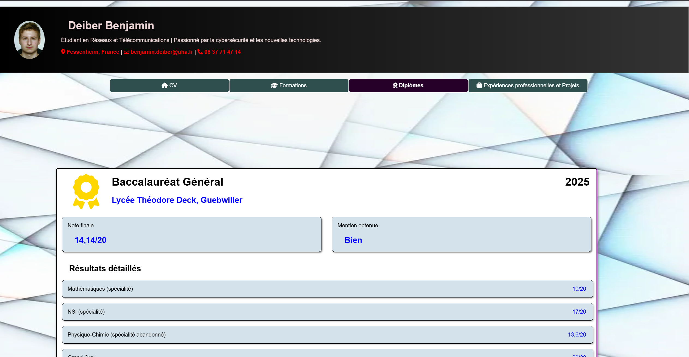

SAÉ 1.04 — BUT R&T 2025–2026
Site web CV — Version initiale
HTML5 · CSS3 · Flexbox · Grid · Multi-pages
✓ Projet terminé
SAÉ 1.04 — IUT Colmar
Dans le cadre de la SAÉ 1.04 du BUT R&T, j'ai créé un site web multi-pages présentant mon CV. Le but était de créer une page web donnant son CV en utilisant HTML, CSS, les ancres, les flexbox et les grids. Ce site est hébergé sur GitHub Pages et accessible en ligne.
Site en ligne
Description du projet (SAÉ 1.04)
📄 Projet page « web » de Curriculum Vitae
Le but de cette SAÉ est de créer une page « web » donnant son CV.
- Création de plusieurs pages HTML
- Utilisation d'une seule page de style en CSS
- Utilisation des "ancres" vers d'autres pages
- Utilisation des "flexbox" et des "grids"
Stack technique
Ce que j'ai appris
- Maîtrise de la structure HTML sémantique multi-pages
- CSS Grid et Flexbox pour des mises en page complexes
- Navigation entre pages avec ancres HTML
- Feuille de style CSS partagée entre toutes les pages
- Déploiement sur GitHub Pages
Référentiel de compétences BUT R&T
Preuves
Site CV original disponible en ligne sur GitHub Pages : debenji68.github.io/cv-web/
Code source disponible sur GitHub. Voir le dépôt



